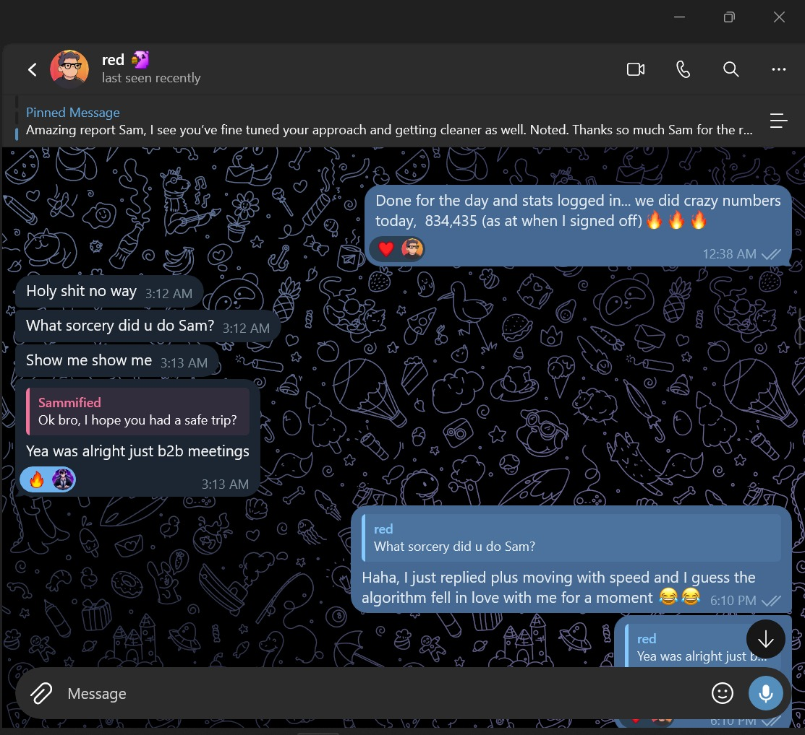
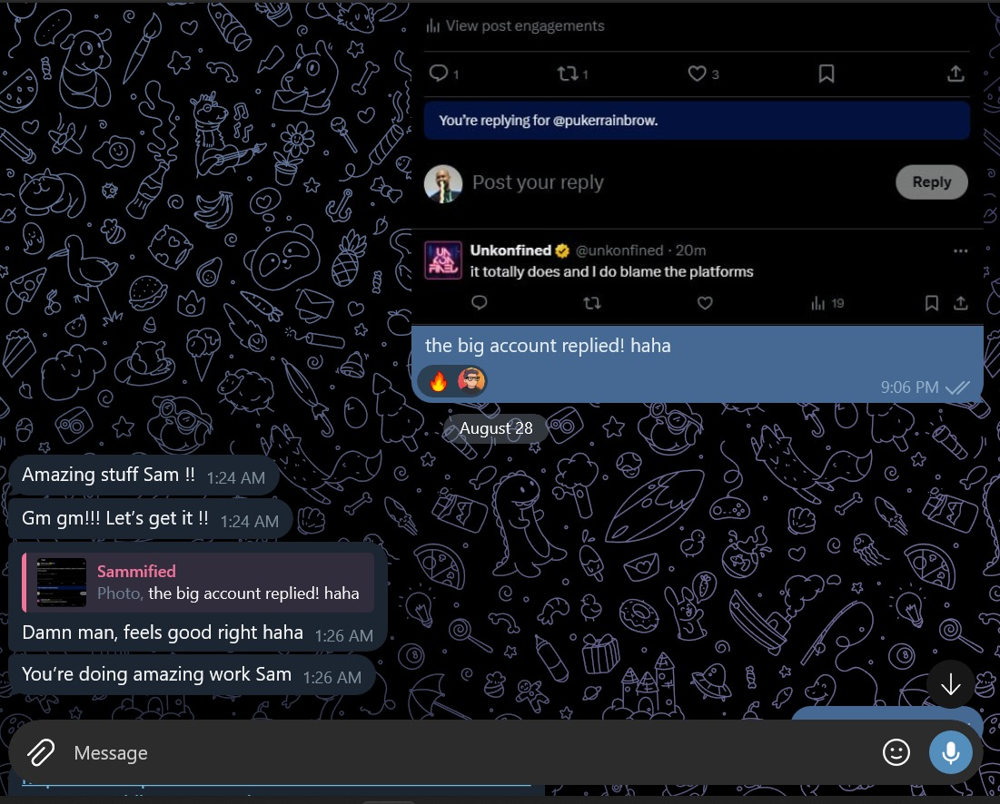
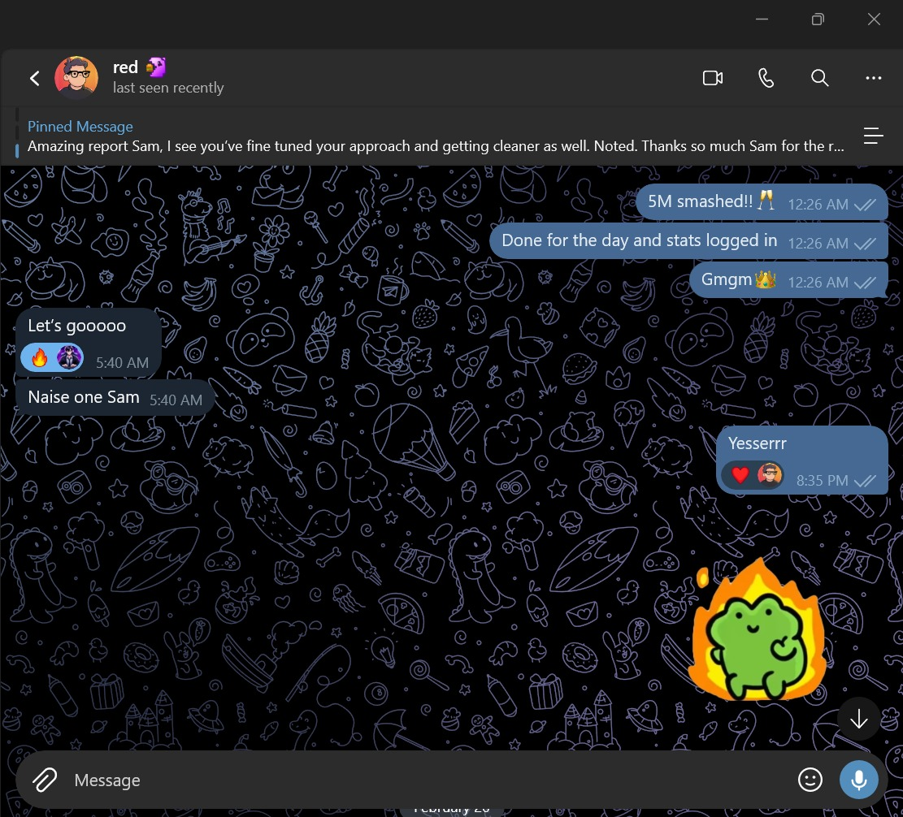
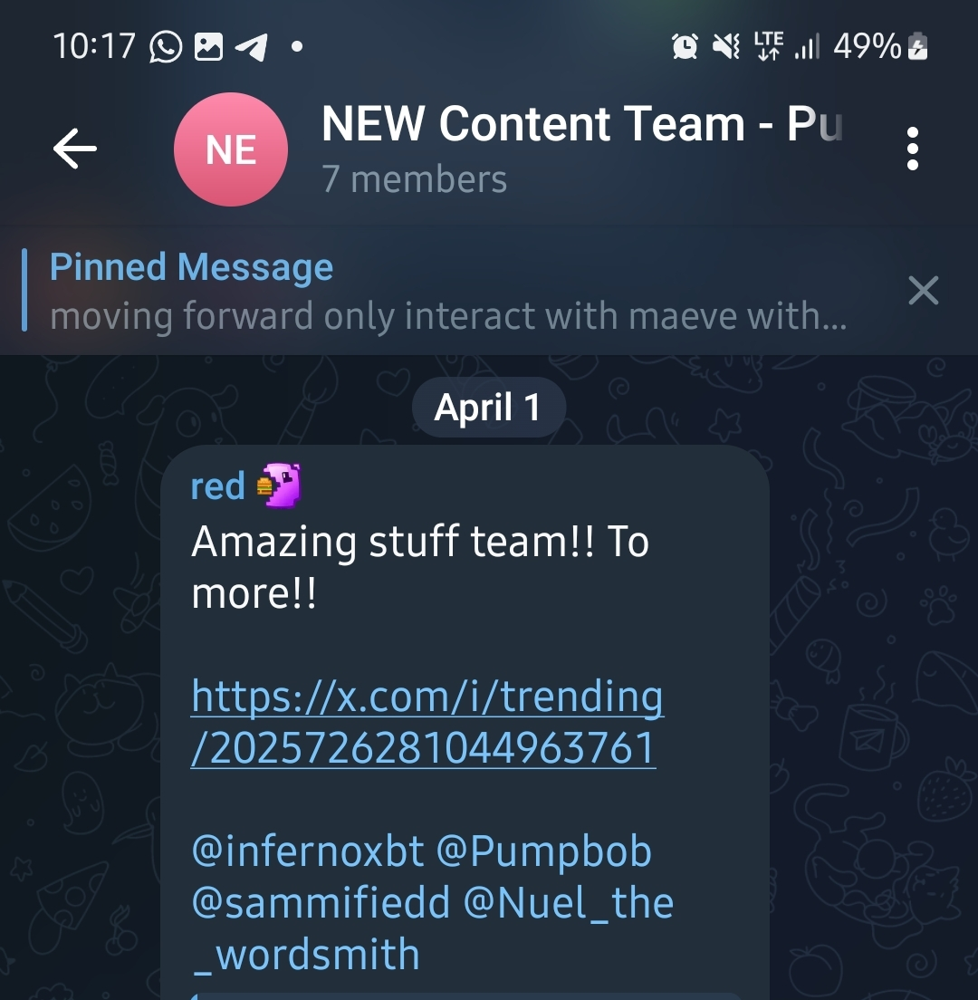
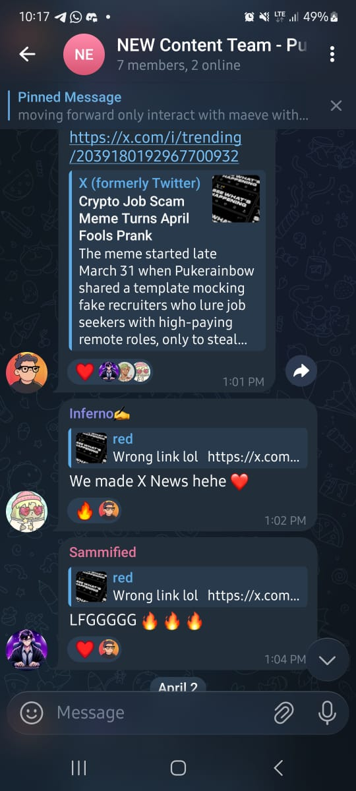

Ghostwriter · Email Copy · Personal Brand · Info Products
I write for founders who are building in public and need words that actually move people.
Ghostwriting, email sequences, and direct response copy for coaching and info product businesses. I've helped founders grow from nothing to audiences that buy, on X, LinkedIn, and in the inbox.
Work
What I've actually done
Three engagements worth walking through. Each one shows a different part of what this role needs.
The founder was posting. Just not getting anywhere. 8,000 monthly impressions for a media brand that had real things to say. The content wasn't the problem. The system was.
I built a reply-led growth strategy around peak impression windows. When the big accounts are most active, that's when we show up. Fast, specific, worth reading. Not just comments. Replies that made people click through to see who was talking. I ran the full pipeline: research, drafting, scheduling, and tweaking based on what the numbers were telling us every week.
The original content ran in parallel: long-form posts that gave the account a point of view worth following. The reply strategy drove discovery. The content made people stay.
Three months later: 22.7M impressions. A 2,800x increase. The account crossed X's monetization threshold. Both founders qualified and made $6K and $2.5K respectively. The replies also consistently pulled responses from large accounts, which compounded reach further.
I track everything in a spreadsheet: impressions, follower movement, profile visits, post type, time of day. That's how I knew which reply formats to double down on and which angles to retire. It's not guesswork when you have the data telling you what's working.
Their outbound emails weren't getting replies. The sequence existed, it just didn't do anything. I went through it line by line. Scored each email on hook strength, subject line, value clarity, how hard the CTA asked, and whether the follow-ups added anything or just made noise.
The core problem was the same thing I see in most email sequences: they were selling what the product does instead of what the buyer gets. Every email started with the product. None of them started with the prospect's situation.
I rebuilt the full three-email sequence with a new subject line framework, an outcome-first hook structure, and a break-up email that created urgency without sounding desperate. Each email had one job. Each one handed off cleanly to the next.
A fintech startup that needed to prove demand before they launched. No audience. No brand recognition. A timeline that didn't leave room for experimenting.
I built the positioning from scratch. Figured out who they were actually for, what that person cared about, and why this product should matter to them more than anything else in their category. That became the landing page. Then I built a distribution system around it: community seeding in the right places, referral loops that gave early signups a reason to bring others, owned-channel activation. No paid spend at any point.
10,000 waitlist signups before launch day. The brand went live with social proof already in place and an audience that was warm before the first announcement went out.
Proof
What it actually looked like, in real time
Screenshots from the Pukecast engagement. Team chat, direct messages, and the moment a reply strategy got picked up by X itself.

The founder's reaction to a single day's numbers, 834K impressions, and asking what changed in the approach that day.

One of the reply-strategy wins: a larger account responding directly, which is one of the core levers behind the impression growth.

A note on consistency over the engagement, the approach getting sharper and cleaner the longer the system ran.

The team flagging that the account had hit X's trending page, a direct result of the reply and content strategy running that week.

The trending moment was significant enough that it was picked up by X News directly. The team celebration here is shared, but the tweet that triggered it was mine individually.
How I work
I run on data, not instinct alone
Most ghostwriters write and hope. I track everything and know when to keep going and when to change direction.
Weekly tracking, not monthly guessing
I maintain a spreadsheet that tracks impressions, follower movement, profile visits, engagement rate by post type, and reply performance. Every week I can tell you exactly what's working, what's plateaued, and what we should stop doing. That's how the Pukecast account scaled as fast as it did. I wasn't waiting until the end of the month to notice something wasn't performing.
I also know when to hold a strategy and when to move on. If something's declining two weeks in a row, I'm not attached to it. If something's compounding, I double down before the window closes.
Reply strategies that get big accounts to respond
My X reply strategy isn't just about reaching more people. It's built to get replies from large accounts, which extends reach beyond your own follower count. During my time at Pukecast, this was one of the main drivers of the impression growth. We weren't waiting for people to discover us. We were showing up in conversations that were already happening.
Same principle applies on LinkedIn. Reply strategies there drive profile visits. Content is what converts those visitors into followers, connections, and eventually buyers.
Writing Sample
A ghostwritten email, written as Leo, to his audience
This is what a welcome email might look like for someone who just opted into the Faceless Launchpad ecosystem. Written in the founder's voice, to the person who's been thinking about starting a faceless channel but hasn't pulled the trigger.
Hey [First name],
You opted in because something clicked. Maybe you're tired of trading hours for money. Maybe you've watched faceless channels rack up views and subscribers and wondered if you could do the same. Maybe you're just done waiting for a "better time."
I've talked to hundreds of people in your position. Smart people with real ideas who held back for one reason: they thought YouTube required them to be on camera, to be a personality, to already have an audience.
None of that is true.
The channels that make real money ($3K, $8K, $20K a month). Most of them are run by people you've never seen. No face. No name attached. Just a system that works while they sleep.
That's what Faceless Launchpad is built around. Not the theory of it. The actual framework: what to pick, how to structure it, how to get it to a point where it runs itself.
Over the next few days I'm going to show you exactly how it works. Not to hype you up. To show you the specific things that separate channels that grow from the ones that don't, and where most people go wrong in the first 30 days.
First email lands tomorrow. Check it.
- Leo
Capabilities
What I bring to this role, specifically
The application lists email copy, X ghostwriting, LinkedIn ghostwriting, announcement posts, and story sequences. Here's where I stand on each.
About
How I got here
I started writing for people who couldn't figure out why their product wasn't growing. Good product, real audience, clear value. And still, nothing was moving. That question drove me into copy, positioning, voice, distribution. The things that turn good ideas into businesses people actually pay for.
I've worked across SaaS, fintech, AI, Web3, and media. But the through-line has always been the same: make the right person understand the right thing at the right moment, then give them a reason to act. That's it. Every piece of writing I do is trying to solve that problem.
The thing that separates what I do from most ghostwriters is that I don't just write. I track. I know when a strategy is working before most people would notice, and I know when to pull the plug before it drains the account. The Pukecast numbers didn't happen by accident. They happened because I was watching the data every week and adjusting before things went sideways.
I work independently. I take accountability seriously. And I only take projects where I can see a real path to results worth talking about.
If this reads like the right fit, let's talk.
I move fast when the work is a match.